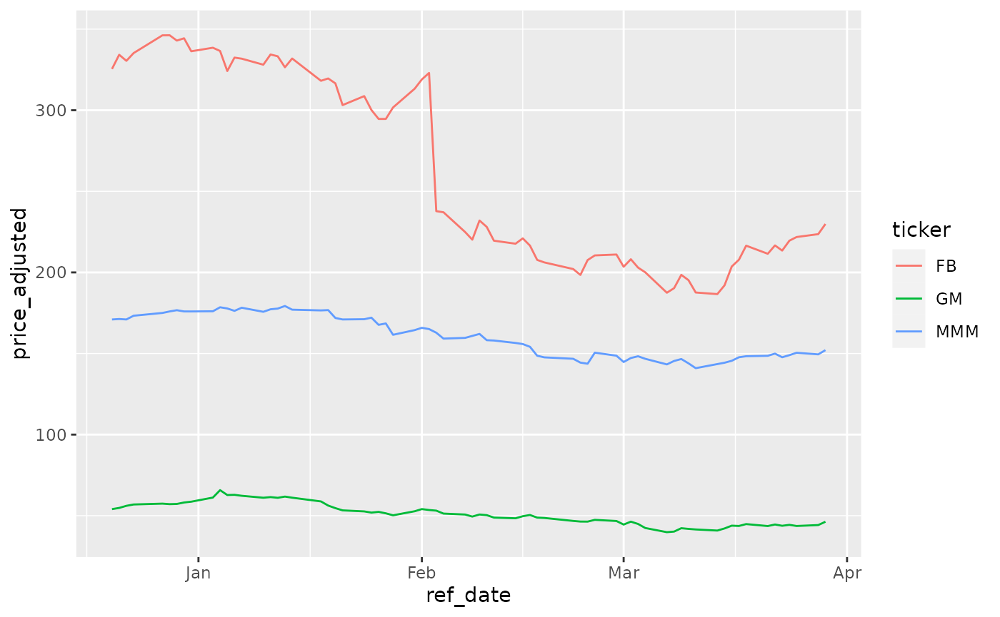

library(yfR)
# set options for algorithm
my_ticker <- 'FB'
first_date <- Sys.Date() - 30
last_date <- Sys.Date()
# fetch data
df_yf <- yf_get_data(tickers = my_ticker,
first_date = first_date,
last_date = last_date)## ## ── Running yfR for 1 stocks | 2022-02-28 --> 2022-03-30 (30 days) ──## ## ℹ Downloading data for benchmark ticker ^GSPC## ℹ (1/1) Fetching data for FB## ! - not cached## ✔ - cache saved successfully## ✔ - got 22 valid rows (2022-02-28 --> 2022-03-29)## ✔ - got 100% of valid prices -- Looking good!## ℹ Binding price data
# output is a tibble with data
head(df_yf)## # A tibble: 6 × 10
## ticker ref_date price_open price_high price_low price_close volume
## <chr> <date> <dbl> <dbl> <dbl> <dbl> <dbl>
## 1 FB 2022-02-28 208. 213. 207. 211. 34239800
## 2 FB 2022-03-01 210. 212. 202. 203. 27094900
## 3 FB 2022-03-02 205. 209. 202. 208. 29452100
## 4 FB 2022-03-03 209. 209. 201. 203. 27263500
## 5 FB 2022-03-04 202. 206. 199. 200. 32130900
## 6 FB 2022-03-07 201. 201. 187. 187. 38560600
## # … with 3 more variables: price_adjusted <dbl>, ret_adjusted_prices <dbl>,
## # ret_closing_prices <dbl>
library(yfR)
library(ggplot2)
my_ticker <- c('FB', 'GM', 'MMM')
first_date <- Sys.Date() - 100
last_date <- Sys.Date()
df_yf_multiple <- yf_get_data(tickers = my_ticker,
first_date = first_date,
last_date = last_date)## ## ── Running yfR for 3 stocks | 2021-12-20 --> 2022-03-30 (100 days) ──## ## ℹ Downloading data for benchmark ticker ^GSPC## ℹ (1/3) Fetching data for FB## ✔ - found cache file (2022-02-28 --> 2022-03-29)## ! - need new data (cache doesnt match query)## ✔ - got 69 valid rows (2021-12-20 --> 2022-03-29)## ✔ - got 100% of valid prices -- Well done runner!## ℹ (2/3) Fetching data for GM## ! - not cached## ✔ - cache saved successfully## ✔ - got 69 valid rows (2021-12-20 --> 2022-03-29)## ✔ - got 100% of valid prices -- Youre doing good!## ℹ (3/3) Fetching data for MMM## ! - not cached## ✔ - cache saved successfully## ✔ - got 69 valid rows (2021-12-20 --> 2022-03-29)## ✔ - got 100% of valid prices -- Feliz que nem lambari de sanga!## ℹ Binding price data
Collections are just a bundle of tickers pre-organized in the package. For example, collection SP500 represents the current composition of the SP500 index.
library(yfR)
df_yf <- yf_get_collection("SP500")
head(df_yf)##
## Attaching package: 'dplyr'## The following objects are masked from 'package:stats':
##
## filter, lag## The following objects are masked from 'package:base':
##
## intersect, setdiff, setequal, union
my_ticker <- 'GE'
first_date <- '2010-01-01'
last_date <- Sys.Date()
df_dailly <- yf_get_data(tickers = my_ticker,
first_date, last_date,
freq_data = 'daily') |>
mutate(freq = 'daily')## ## ── Running yfR for 1 stocks | 2010-01-01 --> 2022-03-30 (4471 days) ──## ## ℹ Downloading data for benchmark ticker ^GSPC## ℹ (1/1) Fetching data for GE## ! - not cached## ✔ - cache saved successfully## ✔ - got 3081 valid rows (2010-01-04 --> 2022-03-29)## ✔ - got 100% of valid prices -- All OK!## ℹ Binding price data
df_weekly <- yf_get_data(tickers = my_ticker,
first_date, last_date,
freq_data = 'weekly') |>
mutate(freq = 'weekly')## ## ── Running yfR for 1 stocks | 2010-01-01 --> 2022-03-30 (4471 days) ──## ## ℹ Downloading data for benchmark ticker ^GSPC## ℹ (1/1) Fetching data for GE## ✔ - found cache file (2010-01-04 --> 2022-03-29)## ✔ - got 3081 valid rows (2010-01-04 --> 2022-03-29)## ✔ - got 100% of valid prices -- All OK!## ℹ Binding price data
df_monthly <- yf_get_data(tickers = my_ticker,
first_date, last_date,
freq_data = 'monthly') |>
mutate(freq = 'monthly')## ## ── Running yfR for 1 stocks | 2010-01-01 --> 2022-03-30 (4471 days) ──## ## ℹ Downloading data for benchmark ticker ^GSPC## ℹ (1/1) Fetching data for GE## ✔ - found cache file (2010-01-04 --> 2022-03-29)## ✔ - got 3081 valid rows (2010-01-04 --> 2022-03-29)## ✔ - got 100% of valid prices -- Time for some tea?## ℹ Binding price data
df_yearly <- yf_get_data(tickers = my_ticker,
first_date, last_date,
freq_data = 'yearly') |>
mutate(freq = 'yearly')## ## ── Running yfR for 1 stocks | 2010-01-01 --> 2022-03-30 (4471 days) ──## ## ℹ Downloading data for benchmark ticker ^GSPC## ℹ (1/1) Fetching data for GE## ✔ - found cache file (2010-01-04 --> 2022-03-29)## ✔ - got 3081 valid rows (2010-01-04 --> 2022-03-29)## ✔ - got 100% of valid prices -- Time for some tea?## ℹ Binding price data
df_allfreq <- bind_rows(
list(df_dailly, df_weekly, df_monthly, df_yearly)
) |>
mutate(freq = factor(freq,
levels = c('daily',
'weekly',
'monthly',
'yearly'))) # make sure the order in plot is right
p <- ggplot(df_allfreq, aes(x=ref_date, y = price_adjusted)) +
geom_point() +
geom_line() +
facet_grid(freq ~ ticker) +
theme_minimal() +
labs(x = '', y = 'Adjusted Prices')
print(p)
library(yfR)
library(ggplot2)
my_ticker <- c('FB', 'GM', 'MMM')
first_date <- Sys.Date() - 100
last_date <- Sys.Date()
df_yf_multiple <- yf_get_data(tickers = my_ticker,
first_date = first_date,
last_date = last_date)## ## ── Running yfR for 3 stocks | 2021-12-20 --> 2022-03-30 (100 days) ──## ## ℹ Downloading data for benchmark ticker ^GSPC## ℹ (1/3) Fetching data for FB## ✔ - found cache file (2021-12-20 --> 2022-03-29)## ✔ - got 69 valid rows (2021-12-20 --> 2022-03-29)## ✔ - got 100% of valid prices -- Youre doing good!## ℹ (2/3) Fetching data for GM## ✔ - found cache file (2021-12-20 --> 2022-03-29)## ✔ - got 69 valid rows (2021-12-20 --> 2022-03-29)## ✔ - got 100% of valid prices -- You got it runner!## ℹ (3/3) Fetching data for MMM## ✔ - found cache file (2021-12-20 --> 2022-03-29)## ✔ - got 69 valid rows (2021-12-20 --> 2022-03-29)## ✔ - got 100% of valid prices -- All OK!## ℹ Binding price data
l_wide <- yf_convert_to_wide(df_yf_multiple)
prices_wide <- l_wide$price_adjusted
head(prices_wide)## # A tibble: 6 × 4
## ref_date FB GM MMM
## <date> <dbl> <dbl> <dbl>
## 1 2021-12-20 325. 54.0 171.
## 2 2021-12-21 334. 54.8 171.
## 3 2021-12-22 330. 56.1 171.
## 4 2021-12-23 335. 56.9 173.
## 5 2021-12-27 346. 57.4 175.
## 6 2021-12-28 346. 57.1 176.